舰船模块
Found within the 爱国行政中心, 舰船模块 can be 已升级 to assist the 绝地潜兵 with their Missions.
超级驱逐舰 升级(s)
On release, there were three 升级 tiers per 章节 of the 超级驱逐舰. 偶尔, additional 升级 五月 be released. It is 重要 to note that the 升级 only affect the 绝地潜兵 that purchases them. These 升级 also change the 外观 of the interior and exterior of the 超级驱逐舰.
On 2024-04-11, in a configuration change between 补丁 1.000.202 和 1.000.203, a fourth 升级 was released for all ship sections.[1][2]
On 2024-07-05, in 补丁 1.000.404, a fifth 升级 was released for all ship sections.[3][4]
Module 升级
舰船模块 费用  Common Sample, Rare Sample，以及 Super Sample to 升级. 申购单 are also 必需 beginning at tier 4.
Common Sample, Rare Sample，以及 Super Sample to 升级. 申购单 are also 必需 beginning at tier 4.
| Ship 章节 | 升级 Name | Common | Rare | Super | 申购点 | 效果 |
|---|---|---|---|---|---|---|
| 爱国行政中心  |
捐赠物资使用许可 | 支援武器 携带最大数量的可携带弹匣部署。 | ||||
| 精简申请流程 | 40 | 减少 支援武器 战略配备 冷却 by 10%. | ||||
| Hand Carts | 60 | 5 | 缩短所有……的冷却时间 背包 战略配备，减少 10%. | |||
| 卓越封装方法 | 150 | 15 |  20,000 20,000
|
重新补给 战略配备 补给箱重新装满 支援武器 携带最大数量的可携带弹匣。 | ||
| Payroll 管理 System | 200 | 20 | 30,000
|
减少所有支援武器的装填时间 10%. | ||
| 轨道加农炮  |
高爆弹片 | 降低 伤害 falloff from center of explosions caused by 轨道 战略配备。 | ||||
| 增强枪炮火力 | 60 | 弹幕 轨道武器发射 1 additional 齐射(s) per 弹幕. | ||||
| 零重力后膛装弹 | 80 | 10 | 轨道 战略配备冷却时间缩短 10%. | |||
| 大气监测 | 150 | 15 | 25,000
|
轨道武器 HE 弹幕 散射 已降低 by 15%. | ||
| 高密度炸药 | 200 | 20 | 35,000
|
将轨道战略配备爆炸的伤害半径提升 10%. | ||
| Hangar |
液态通风驾驶舱 | 鹰 战略配备冷却时间缩短 50%. | ||||
| Pit Crew 危害 Pay | 40 | 降低 鹰 重新武装时间 20%. | ||||
| 武器舱扩容 | 80 | 10 | 增加 number of 鹰 每次……的战略配备使用次数 重新武装 1次。 | |||
| XXL号武器舱 | 150 | 15 | 25,000
|
投掷多枚炸弹的飞鹰战略配备将投掷 1 额外炸弹。 | ||
| 高级船员训练 | 250 | 25 | 30,000
|
飞鹰重新武装冷却时间进一步缩短 10% 如果在飞鹰使用次数仍有剩余时呼叫。 | ||
| Bridge |
瞄准软件升级 | 1秒 所有……呼叫时间缩短 轨道 战略配备。 | ||||
| 核动力雷达 | 40 | 增加 小地图 enemy ping radius by 50%. | ||||
| 电动转向 | 80 | 10 | Improves steering for 绝地潜兵 during 绝地喷射舱 deployment. | |||
| 强化燃烧 | 150 | 15 | 25,000
|
火焰伤害 from 战略配备 已增加 by 25%. | ||
| 士气强化 | 200 | 20 | 35,000
|
减少冷却时间 所有战略配备 by 5%. | ||
| 工程港  |
合成补给 | 10 | 减少冷却时间 哨戒炮, 阵地, and 重新补给 战略配备，减少 10%. | |||
| 高级建造 | 60 | 5 | 增加……的生命值 哨戒炮 战略配备，减少 50%. | |||
| 快速发射系统 | 80 | 10 | 所有 阵地 战略配备在呼叫后立即投放，缩短总体部署时间。 | |||
| 扩建电路 | 150 | 20 | 20,000
|
闪电 arcs, fired from 武器 and 炮塔, jump to one additional 敌人. | ||
| 简化发射流程 | 200 | 25 | 30,000
|
所有 支援武器 战略配备在呼叫后立即投放，缩短总体部署时间。 | ||
| Robotics Workshop |
动态追踪 | 20 | 所有 哨戒炮 战略配备在呼叫后立即投放，缩短总体部署时间。 | |||
| 减震凝胶 | 40 | 5 | 增加所有……的弹药 哨戒炮 战略配备，减少 50%. | |||
| 优质润滑剂 | 80 | 10 | 哨戒炮可更快地转向新目标。 | |||
| 爆炸吸收 | 150 | 20 | 25,000
|
哨戒炮 take 50% 受到的爆炸伤害更少。 | ||
| 跨平台兼容 | 200 | 30 | 35,000
|
迫击炮 哨戒炮会优先射击标记目标。 | ||
| 总计 | 2,920 | 305 | 335,000
|
备注
- There are two achievements associated with 舰船模块: 'Ship it!' awarded for upgrading all 舰船模块 at least 1 level, and 'Fully operational' awarded for reaching max level on one 舰船模块.
- 'Fully operational' was easier at launch as there were only three tiers of modules available at the time. When the additional tiers were added, the 成就 was not retroactively adjusted.
变更历史
1.000.404
2024-07-04
Added Level 5 Modules.
1.000.202
2024-04-11
(Mid-补丁)
Added Level 4 Modules for all 超级驱逐舰 systems.